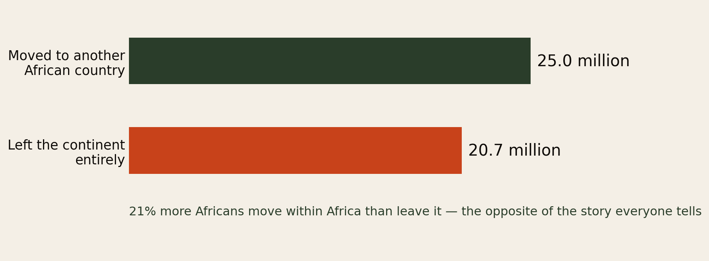
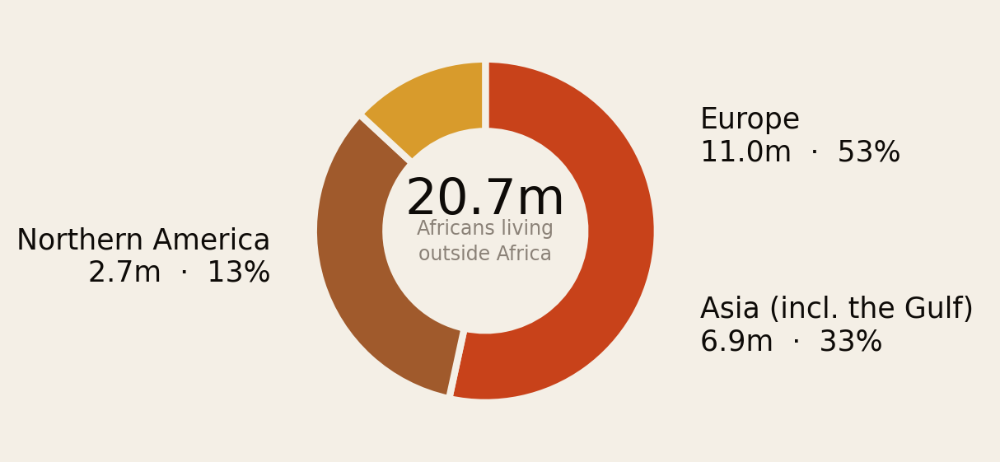
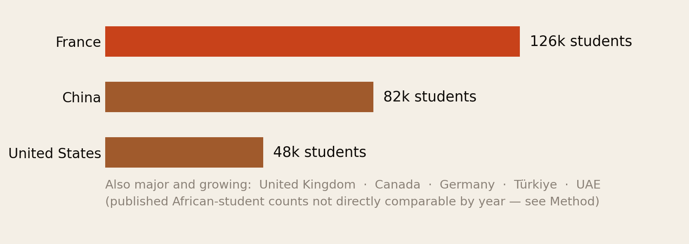
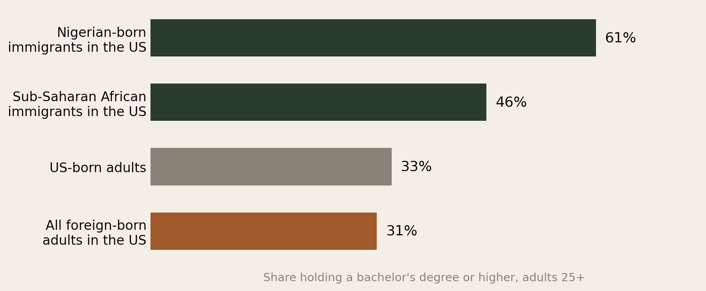
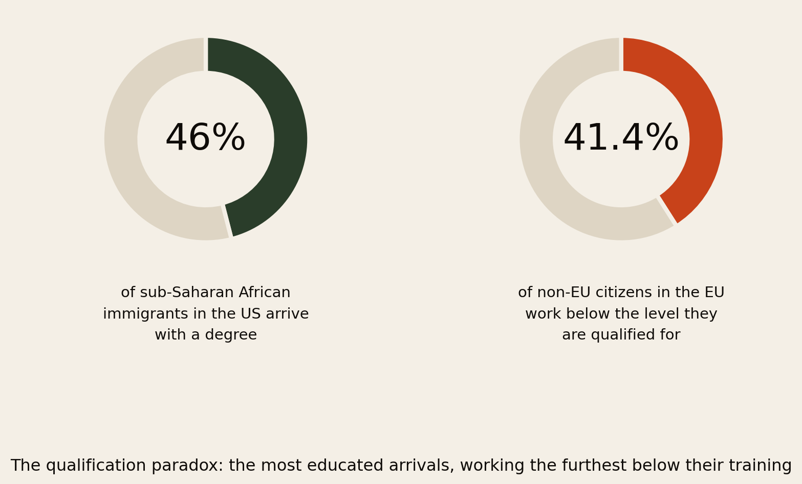
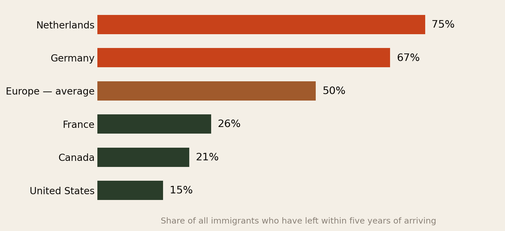
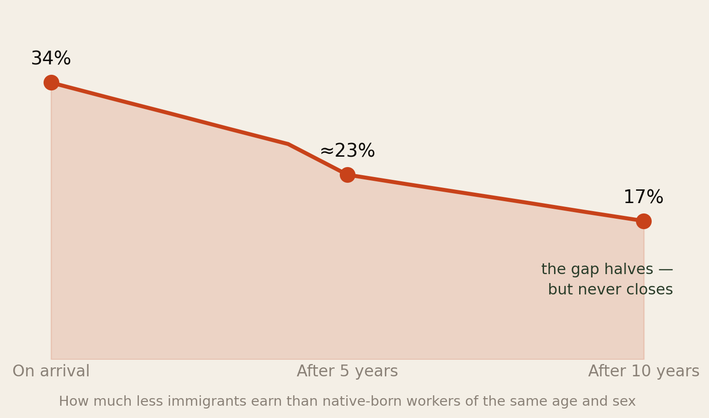

More Africans Move to Africa Than Leave It.
How many Africans actually live outside the continent, where they are, how many are working and how many are studying, why they went — and the question nobody asks until it is too late: how long do they stay?
Section 01Executive Summary
The African diaspora is discussed constantly and counted rarely. When it is counted, the numbers usually arrive without the two things that make them useful: what these people are actually doing, and how long they stay.
Here is the picture the data supports:
- 20.7 million Africans live outside the continent — but 25 million moved to another African country. Intra-African migration is 21% larger than the exodus everyone writes about (UN DESA, International Migrant Stock 2024).
- Europe holds about 11 million, Asia including the Gulf about 6.9 million, and Northern America about 2.7 million. The Gulf is a far bigger destination than the popular narrative allows, and North America a far smaller one.
- Roughly half a million African students study abroad each year. France is the largest single host, followed by China — not the United States, and not the United Kingdom.
- 46% of sub-Saharan African immigrants in the US hold a bachelor’s degree or higher, against about 31% of all foreign-born adults. For Nigerian-born immigrants it is roughly 61%. Africans abroad are among the most educated migrant populations on Earth.
- And 41.4% of non-EU citizens in the EU work below the level they are qualified for. The same population, the same year. That is the central finding of this report.
- Between 20% and 50% of all immigrants leave within five years — 75% in the Netherlands, 67% in Germany, but only 15% in the United States (OECD). Where you move decides how likely you are to stay, more than why you moved.
The diaspora is not a permanent population that occasionally goes home. It is a revolving door, and the door turns at completely different speeds depending on which country you walked into.
Section 02The Headline Count

Start here, because almost every conversation about African migration starts in the wrong place. 25 million Africans live in an African country other than the one they were born in. 20.7 million live outside the continent altogether. Intra-African movement is the larger flow, by 21%.
This matters for the diaspora specifically, and not only as a corrective. It means the person who moved from Zimbabwe to South Africa, from Burkina Faso to Côte d’Ivoire, or from Somalia to Kenya is having a migration experience that is numerically more typical than the one had by the person in London or Houston. Most African migration is regional, driven by work and proximity, and largely invisible to the media framing of “the African diaspora”.
It also puts the 20.7 million in proportion. Against a continental population well above 1.4 billion, the Africans who have left the continent are on the order of 1.5% of all Africans. The diaspora is enormously influential — it sends home more money than foreign investment and aid combined, as our savings report documented — but it is a small, self-selected slice of the continent, and its experience should not be mistaken for the general one.
Section 03Where They Actually Are

Three things in this chart cut against the received picture.
Europe dominates, and it is not close. Eleven million — more than half of all Africans outside the continent. The Mediterranean corridor, the French and British colonial ties, and the sheer proximity of North Africa to southern Europe make this the default destination in a way North America has never been.
Asia is the second-largest destination, mostly meaning the Gulf. Nearly 7 million — two and a half times the North American figure. This population is largely invisible in diaspora conversation, partly because Gulf migration is structurally different: as The Visa Treadmill found, Saudi Arabia, Kuwait and the UAE offer no realistic citizenship pathway at all. Millions of Africans are living long-term in countries where permanent belonging is not on offer at any price. That is a different kind of diaspora, and it deserves more attention than it gets.
Northern America is smaller than almost anyone assumes. 2.7 million, about 13%. It looms far larger in the imagination than in the count — a function of American cultural reach, the visibility of Nigerian and Ghanaian professional communities, and the fact that a disproportionate share of diaspora media is produced there.
Section 04The Students
Roughly half a million African students were studying abroad annually as of the last full pre-pandemic count, and the figure has climbed since. Against a global total of around seven million internationally mobile students by 2024, Africa is a significant and fast-growing share.

France is the largest single destination — roughly 126,000 African students — and the reason is structural rather than competitive: language, near-free public university tuition, and dense existing family networks across francophone West and North Africa. As Where the Door Is Actually Open set out, a francophone African student faces a materially easier path into France than an equivalent anglophone student faces anywhere.
China is second, at around 81,500, and this is the number that surprises people. China built that position deliberately over two decades through scholarship diplomacy tied to infrastructure and trade relationships. It is now a larger host of African students than the United States.
The United States sits third at about 48,000 — a fraction of France’s intake, despite hosting the world’s largest international student population overall. African students are heavily under-represented in American higher education relative to the continent’s size.
The UK, Canada, Germany, Türkiye and the UAE are all significant and, in several cases, growing faster than the leaders. Canada and the UK saw extraordinary growth in African enrolments between 2021 and 2023 — and both have since tightened, which is reshaping where the next cohort goes.
The student flow is the front end of the diaspora pipeline. Where students go this decade determines where the workers, taxpayers and remitters are in the next one.
Section 05The Workers
Most Africans outside the continent are there to work, and the labour-market data tells a consistent story across destinations: they participate heavily, and they are paid less than comparable native-born workers.
The OECD’s 2025 finding is the clearest single number: immigrants entering the labour market earn 34% less than native-born workers of the same age and sex. Two-thirds of that gap is not discrimination in the direct sense — it is composition. Immigrants are concentrated in lower-paying sectors and lower-paying firms (OECD International Migration Outlook 2025).
That distinction matters enormously for what you do about it. If the gap were purely prejudice, the answer would be legal. Because it is largely which firm and which sector you land in, the answer is strategic: the first job you accept abroad has effects that compound for a decade, because moving up between firms and sectors is what closes the gap.
Section 06The Qualification Paradox
Now the finding this report exists to state plainly.

Africans who leave the continent are not the continent’s average. They are, by a wide margin, among the most educated migrant populations anywhere. 46% of sub-Saharan African immigrants in the US hold a bachelor’s degree or higher, against about 31% of all foreign-born adults and roughly a third of the US-born population. For Nigerian-born immigrants the figure is about 61% — nearly double the US-born rate.
Now set that beside the European labour data.

41.4% of non-EU citizens in the EU are over-qualified for the job they hold — the highest of any group, and highest of all among non-EU-born women. The rate has improved slowly, from 45.9% in 2014 to 39.6% in 2024 for the non-EU-born, but it remains the defining feature of migrant employment in Europe.
Africa is not losing its least employable people. It is losing its doctors, engineers and graduates — and then watching a large share of them drive taxis, stack shelves and staff care homes in countries that will not recognise their qualifications.
This is the real cost of migration, and it is paid twice. Africa loses the training investment. The migrant loses the career. The destination country gains a worker but not the skill it was trained for. Everybody involved is worse off than they would be under a functioning credential-recognition system — which is why that, and not visa policy, is arguably the highest-leverage reform available.
Section 07Why They Went
The data above explains a great deal about who leaves. Four structural forces explain why.
- The wage gap is the engine, and it is enormous. Even earning 34% less than a native-born peer, an African professional in Europe or North America typically earns a multiple of what the same work pays at home, in a currency that does not depreciate. That single arithmetic fact outweighs almost every deterrent policy governments design.
- Education is a route, not just a goal. Half a million students a year are not only buying degrees — they are buying legal presence, a post-study work window, and a path to residence. The countries that shorten that window, as the UK is doing in January 2027, are changing the migration decision itself.
- Networks compound. Migration follows migration. France hosts the most African students because it already hosts the most African families; Gulf recruitment runs on established agency corridors. This is why flows are so persistent even when policy tightens — the network, not the policy, is the main driver at the margin.
- Credential markets pull specific professions. Health systems in the UK, US, Canada and the Gulf actively recruit African nurses and doctors. This is not incidental migration; it is targeted acquisition of skills that African health systems paid to produce.
Note what is not on that list as a primary driver: desperation. The most-educated-migrants finding is decisive here. Leaving the continent requires a passport, a visa fee, an airfare, a qualification and usually a network — a package the poorest simply do not have. Emigration out of Africa is overwhelmingly a middle-class act. The people with the fewest options move within the continent, or do not move at all.
Section 08How Long They Stay
This is the least-discussed number in migration and probably the most consequential for anyone planning a life.

Across the OECD, between 20% and 50% of all immigrants leave within five years of arriving. But the spread between destinations is the story.
Three quarters of arrivals in the Netherlands are gone within five years. Two thirds in Germany. Half across Europe on average. Against that, the United States loses only about 15% and Canada about 21%. A move to Amsterdam and a move to Toronto are not the same decision with a different postcode — they have fundamentally different half-lives.
Why the gap? European mobility is easier — onward movement within the EU is frictionless for many permit-holders, so “exit” often means moving to another European country rather than going home. Distance and cost matter too: transatlantic return is a bigger, more final decision than a flight within Europe. And settlement-oriented systems like Canada’s are explicitly designed to convert arrivals into permanent residents, so the whole architecture pushes toward staying.
One counter-intuitive finding worth sitting with: the OECD notes that migrants who arrive for family or humanitarian reasons return at lower rates than economic migrants. The people who came for work are the ones most likely to leave. The people who came for love or for safety stay. Whatever brought you is a weaker predictor of permanence than whatever roots you.
If you are choosing a destination, you are choosing a probability of still being there in five years. That probability ranges from 25% to 85% depending on the country — and almost nobody factors it in.
Section 09The Ten-Year Clock
For those who stay, the years do real work — but they work slowly, and they never quite finish.

The pay gap starts at 34%. It closes by about a third in the first five years, and by about half in the first ten. So after a decade of work in a new country, the typical immigrant still earns roughly 17% less than a native-born worker of the same age and sex.
The mechanism is documented and it is actionable: the gap narrows mainly because immigrants move to higher-paying firms and sectors. It does not narrow because employers gradually decide to pay you fairly. It narrows because you leave.
Put the three timeframes together and the shape of a diaspora life emerges from the data:
- Years 0–5: the highest-risk window. Between a fifth and three quarters of arrivals leave. Earnings are at their worst relative to local peers. Qualifications are least likely to be recognised.
- Years 5–10: the sorting window. Those who stay move firms and sectors, and the gap closes fastest. This is also when most settlement clocks mature — five years to permanent residence in Germany, Ireland, France and the Netherlands.
- Year 10 and beyond: a durable residual gap of around 17%, and the beginning of the second-generation question, which is a different report.
Section 10What the Numbers Miss
Every figure above counts the foreign-born. That single methodological choice hides a great deal.
- The second generation is invisible. Children born abroad to African parents do not appear in migrant-stock data at all. The lived African diaspora — the one that shows up at the community association, buys the plantain, sends money to a grandmother — is substantially larger than 20.7 million.
- The historic diaspora is excluded entirely. The descendants of the transatlantic slave trade, tens of millions of people, are not migrants and appear nowhere in these statistics. Any figure describing “the African diaspora” as ~20 million is describing recent migration only.
- Irregular migrants are undercounted by design, in every country, in every dataset.
- Naturalised citizens may drop out of some national statistics once they acquire citizenship, depending on whether the country counts by birthplace or by nationality — which is part of why the EU over-qualification figures for “non-EU citizens” and “non-EU born” differ.
- Students are counted inconsistently — some countries include them in migrant stock, others do not, and enrolment counts lag by years.
Section 11What This Means For You
- Choose your destination for its five-year retention, not its brochure. If your intention is to settle, the difference between a country where 15% leave and one where 75% leave is the single largest variable in this report. Settlement-oriented systems — Canada, the US, France — hold people. Frictionless-mobility systems churn them.
- Treat the first job as a ten-year decision. Two-thirds of the earnings gap is which sector and which firm you land in. Taking the fastest available job is rational in month one and expensive by year five. Where you can, take the job in the higher-paying sector even at the same starting salary.
- Convert your qualification before you need to. The 41.4% over-qualification rate is the biggest destroyer of value in the whole diaspora experience. Credential conversion is slow, expensive and boring — and it is the highest-return administrative act available to you.
- If you are advising someone at home, price the regional option honestly. Twenty-five million people moved within Africa. For many trades and professions, Kigali, Nairobi, Accra or Johannesburg offers a better real outcome than a European care home — and the mobility is improving.
- Know that leaving is normal. Half of arrivals in Europe are gone within five years. If you are considering returning, you are not failing at migration. You are doing the statistically ordinary thing, and the data says nothing about whether it is right for you.
- The Gulf population deserves your attention. Nearly 7 million Africans live in Asia, largely in states offering no path to permanence. If your organising, advocacy or business thinks “diaspora” means London and Atlanta, you are missing a third of the people.
Section 12Method & Limits
What this report is: a demographic portrait assembled from official migration statistics, published as at 11 August 2026.
- Migrant-stock figures count the foreign-born or foreign-national population, not the ethnic or heritage diaspora. See Section 10 — this excludes second generations and the historic diaspora entirely.
- Student counts are not perfectly comparable across countries. The France, China and US figures come from a single comparative analysis using a 2020 reference year; national systems define and count international students differently, and enrolment data lags. Treat Fig 3 as a ranking, not a precise census.
- The education figures are US-specific and should not be read as describing African migrants in Europe or the Gulf, whose profile differs substantially. Sources put the sub-Saharan figure at 42–46% depending on year and definition; we use 46% and state the range.
- The over-qualification figure covers non-EU citizens, not Africans specifically — no equivalent Africa-only series is published. It is directionally right for African migrants and is not a measurement of them alone.
- Exit rates cover all immigrants, not African migrants specifically, and cohorts differ: European figures are for 2010–14 arrivals, US and Canadian for 2010–19. “Exit” conflates returning home with onward movement to a third country, which matters a great deal in Europe.
- The earnings-gap curve interpolates between the OECD’s published entry, five-year and ten-year points. The intermediate years are drawn, not measured.
- Gulf figures are the weakest here. Several GCC states publish limited migration data, so the Asia total is more uncertain than the European or North American ones.
Principal sources: UN DESA International Migrant Stock 2024; IOM World Migration Report 2026; OECD International Migration Outlook 2025; OECD, Sustainable Reintegration of Returning Migrants; Eurostat migrant integration statistics; Migration Policy Institute; Pew Research Center; Carnegie Endowment on student destinations; UNESCO on global student mobility.
↓ Download the full 11-page PDF edition
Companion reports: The Visa Treadmill, Where the Door Is Actually Open and Africa Saves. It Just Doesn’t Compound.
The diaspora helps the diaspora.
Africa Global Forum is a peer network for Africans abroad — help each other, sit together, and bounce ideas. The research above is part of an open library. The Forum itself is by application.